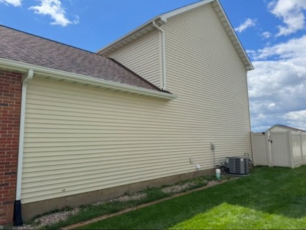
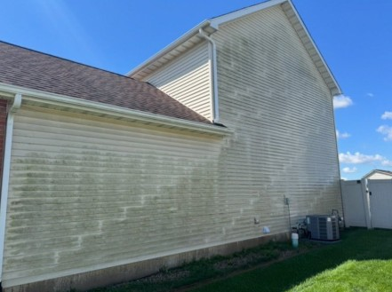
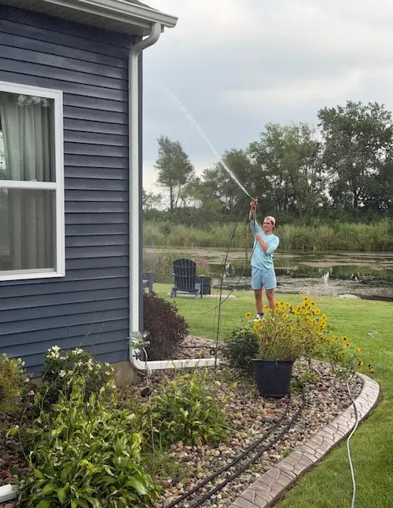

House soft washing
Lift algae, mildew, and grime without damaging siding or finishes.
Professional pressure washing and soft washing for homes and businesses across Crown Point, St. John, and Valparaiso.
Safe methods, professional equipment, and the right pressure for each material.
Lift algae, mildew, and grime without damaging siding or finishes.
Clear buildup and restore drainage with a low-pressure approach.
Refresh driveways, sidewalks, and high-traffic surfaces.
Bring outdoor living spaces back to a cleaner, brighter finish.
Drag the handle to compare a Crown Point house wash before and after professional cleaning.
“The attention to detail was outstanding. Lorenzo is an extremely professional young man.”Verified Google review



Local exterior cleaning for homeowners, businesses, and property managers throughout Crown Point, St. John, Valparaiso, and nearby communities.